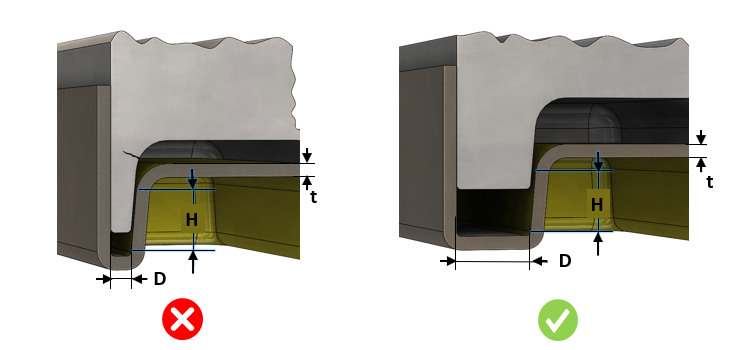

金型壁厚（または公称肉厚に対する比率）は、ユーザーが指定した値より大きくなければなりません。
金型壁厚は、鋳造モデル内の各種フィーチャ間の間隔によって影響を受けます。リブやボスなどのフィーチャが互いに近接して配置されたり、部品の壁面近くに配置されたりすると、薄肉部が形成され、冷却が困難になって品質に影響する可能性があります。金型壁が薄すぎる場合、製造自体も困難になり、ホットブレードの発生や差異冷却などの問題により金型寿命が短くなる可能性があります。
許容される最小金型壁厚は、プロセスおよび材料の観点を踏まえて決定する必要があります。ただし、鋳造部品のフィーチャ間に 1 mm のクリアランスを確保することは合理的であり、その寸法の金型壁厚を確保できます。
ルールの設定には、金型壁厚の絶対値、または部品の公称肉厚に対する比率を使用します。
場合によっては、無視できるほど小さい面高さが、金型壁厚の不具合（違反）として示されることがあります。そのようなケースを回避するために、Face Height（H）>= <Value> mm を入力条件として考慮するオプションを設定できます。
面高さが小さい場合は、金型が破損または曲がる可能性は低くなります。しかし、高さが大きくなるほど、金型が破損または曲がる可能性は高くなります。
ルールUIでは、材料リストは Map Material から生成され、ユーザーは材料とその値を設定できます。
材料とその値を設定した後、Ctrl+M コマンドを使用して、ルールUI内で Material Group と grade でフィルタリングし、設定済み材料の一覧を表示できます。同じキー（Ctrl+M）を使用してフィルターをリセットします。

D = フィーチャ間距離
H = 面高さ
t = 公称肉厚